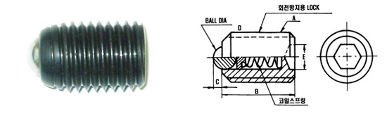
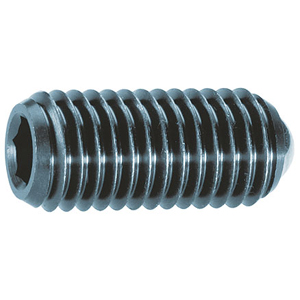

Ball Plunger
육각 홈붙이 나사 안에 스프링으로 볼을 밀어내는 위치결정·인덱싱용 부품으로, 금형·지그·고정구 등의 클릭감 있는 위치 고정에 사용됩니다. 제조사·형번 체계가 다른 국산 BP 시리즈와 독일 Halder(할더) 2203 시리즈를 함께 비교할 수 있도록 모았습니다.
형번 또는 나사 규격 일부만 입력해도 검색됩니다.
육각 소켓 세트스크류 형태의 하우징 안에 코일스프링으로 볼을 밀어내는 표준 볼 플런저입니다. 회전방지용 로크(LOCK) 구조가 함께 표기되어 있습니다.
동우교역 취급 카탈로그 규격 도면

BALL DIA(볼 지름) · D · A(나사) · C · B · 코일스프링 · 회전방지용 LOCK
| 형번(TYPE) | A(나사) | B | C | D | E |
|---|---|---|---|---|---|
| BP-4 | M4×0.7 | 9.0 | 0.8 | 2.0 | 0.6 |
| BP-5 | M5×0.8 | 12.0 | 0.8 | 3.0 | 2.5 |
| BP-6 | M6×1.0 | 13.0 | 0.8 | 3.0 | 3.0 |
| BP-8 | M8×1.25 | 15.0 | 1.0 | 4.0 | 4.0 |
| BP-10 | M10×1.5 | 16.0 | 1.2 | 5.0 | 5.0 |
| BP-12 | M12×1.75 | 20.0 | 1.8 | 7.0 | 6.0 |
| BP-14 | M14×2.0 | 23.0 | 2.2 | 8.0 | 8.0 |
| BP-16 | M16×2.0 | 25.0 | 2.5 | 9.5 | 8.0 |
단위: mm. 하중(스프링 압력) 값은 원본 카탈로그에 표기되어 있지 않아 문의 대상입니다.
독일 Halder(할더)社의 정품 볼 플런저입니다. 소재(쾌삭강/스테인리스)와 스프링 하중(표준/강화) 조합으로 4가지 사양이 있으며, 형번(Ref. No.)에 사양이 구분되어 있습니다.
Halder 정품 참고 사진

d1=나사 · d2=몸통 외경 · l=전장 · s=슬롯 폭 · WS=육각 폭
| 형번(Ref. No.) | d1(나사) | d2 | l | s | WS | 스프링 하중 F1(N) | 스프링 하중 F2(N) | 중량(g) |
|---|---|---|---|---|---|---|---|---|
| 2203.003 | M3 | 1.5 | 8 | 0.4 | 1.5 | 3.0 | 4.5 | 0.4 |
| 2203.004 | M4 | 2.5 | 12 | 0.8 | 2.0 | 8.5 | 14.0 | 0.6 |
| 2203.005 | M5 | 3.0 | 14 | 0.9 | 2.5 | 8.0 | 14.0 | 1.1 |
| 2203.006 | M6 | 3.5 | 15 | 1.0 | 3.0 | 11.0 | 18.0 | 2.0 |
| 2203.008 | M8 | 4.5 | 18 | 1.5 | 4.0 | 18.0 | 31.0 | 4.0 |
| 2203.010 | M10 | 6.0 | 23 | 2.0 | 5.0 | 24.0 | 45.0 | 8.0 |
| 2203.012 | M12 | 8.0 | 26 | 2.5 | 6.0 | 26.0 | 49.0 | 12.0 |
| 2203.016 | M16 | 10.0 | 33 | 3.5 | 8.0 | 41.0 | 86.0 | 31.0 |
| 2203.020 | M20 | 12.0 | 43 | 4.5 | 10.0 | 56.0 | 111.0 | 64.0 |
| 2203.024 | M24 | 15.0 | 48 | 5.5 | 12.0 | 81.0 | 151.0 | 100.0 |
| 형번(Ref. No.) | d1(나사) | d2 | l | s | WS | 스프링 하중 F1(N) | 스프링 하중 F2(N) | 중량(g) |
|---|---|---|---|---|---|---|---|---|
| 2203.045 | M5 | 3.0 | 14 | 0.9 | 2.5 | 15.0 | 22.0 | 1.1 |
| 2203.046 | M6 | 3.5 | 15 | 1.0 | 3.0 | 19.0 | 28.0 | 2.0 |
| 2203.048 | M8 | 4.5 | 18 | 2.0 | 4.0 | 36.0 | 62.0 | 4.0 |
| 2203.050 | M10 | 6.0 | 23 | 2.0 | 5.0 | 57.0 | 104.0 | 8.0 |
| 2203.052 | M12 | 8.0 | 26 | 2.5 | 6.0 | 61.0 | 110.0 | 12.0 |
| 2203.056 | M16 | 10.0 | 33 | 3.5 | 8.0 | 68.0 | 142.0 | 31.0 |
| 2203.060 | M20 | 12.0 | 43 | 4.5 | 10.0 | 84.0 | 166.0 | 64.0 |
| 2203.064 | M24 | 15.0 | 48 | 5.5 | 12.0 | 127.0 | 237.0 | 100.0 |
| 형번(Ref. No.) | d1(나사) | d2 | l | s | WS | 스프링 하중 F1(N) | 스프링 하중 F2(N) | 중량(g) |
|---|---|---|---|---|---|---|---|---|
| 2203.203 | M3 | 1.5 | 8 | 0.4 | 1.5 | 3.0 | 4.5 | 0.4 |
| 2203.204 | M4 | 2.5 | 12 | 0.8 | 2.0 | 8.5 | 14.0 | 0.6 |
| 2203.205 | M5 | 3.0 | 14 | 0.9 | 2.5 | 8.0 | 14.0 | 1.1 |
| 2203.206 | M6 | 3.5 | 15 | 1.0 | 3.0 | 11.0 | 18.0 | 2.0 |
| 2203.208 | M8 | 4.5 | 18 | 1.5 | 4.0 | 18.0 | 31.0 | 4.0 |
| 2203.210 | M10 | 6.0 | 23 | 2.0 | 5.0 | 24.0 | 45.0 | 8.0 |
| 2203.212 | M12 | 8.0 | 26 | 2.5 | 6.0 | 26.0 | 49.0 | 12.0 |
| 2203.216 | M16 | 10.0 | 33 | 3.5 | 8.0 | 41.0 | 86.0 | 31.0 |
| 2203.220 | M20 | 12.0 | 43 | 4.5 | 10.0 | 56.0 | 111.0 | 64.0 |
| 2203.224 | M24 | 15.0 | 48 | 5.5 | 12.0 | 81.0 | 151.0 | 100.0 |
| 형번(Ref. No.) | d1(나사) | d2 | l | s | WS | 스프링 하중 F1(N) | 스프링 하중 F2(N) | 중량(g) |
|---|---|---|---|---|---|---|---|---|
| 2203.245 | M5 | 3.0 | 14 | 0.9 | 2.5 | 15.0 | 22.0 | 1.1 |
| 2203.246 | M6 | 3.5 | 15 | 1.0 | 3.0 | 19.0 | 28.0 | 2.0 |
| 2203.248 | M8 | 4.5 | 18 | 2.0 | 4.0 | 36.0 | 62.0 | 4.0 |
| 2203.250 | M10 | 6.0 | 23 | 2.0 | 5.0 | 57.0 | 104.0 | 8.0 |
| 2203.252 | M12 | 8.0 | 26 | 2.5 | 6.0 | 61.0 | 110.0 | 12.0 |
| 2203.256 | M16 | 10.0 | 33 | 3.5 | 8.0 | 68.0 | 142.0 | 31.0 |
| 2203.260 | M20 | 12.0 | 43 | 4.5 | 10.0 | 84.0 | 166.0 | 64.0 |
| 2203.264 | M24 | 15.0 | 48 | 5.5 | 12.0 | 127.0 | 237.0 | 100.0 |
단위: mm (하중은 N).
※ 국산 BP 시리즈는 국내 유통 카탈로그(동우교역), Halder 2203 시리즈는 Halder社 정식 카탈로그를 기준으로 작성했습니다. 정밀 가공·발주 전에는 반드시 정식 규격표 원본으로 최종 확인하시기 바랍니다.